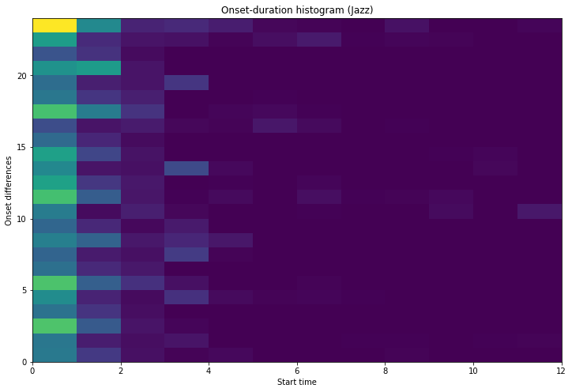

Evaluation Metrics
Building on top of Cifka et al. (2020) and CycleGAN (Lu and Dubnov, 2021), four metrics were used to objectively evaluate the results of style transfer for the models trained. They can be separated into two categories: content preservation and style fit.
Content Preservation
Content preservation metrics provide a measure of content similarity between the original song and its style transfer counterpart. Two metrics are used for measuring preservation, the Tonnetz distance and the frame-wise mean cosine similarity.
Tonnetz Distance
Calculated as the L2 norm of the difference between the Tonnetz projection of a song and the Tonnetz projection of the transferred song. The Tonnetz projection of a song is obtained by computing the dot product between the song chromagram and the base Tonnetz graph.
The Tonnetz graph is obtained by computing a set of coordinates for each tonal category (A to G#), across three different intervals (fifth, minor third and major third). The coordinates are given by the equation ($A$ and $w$ are defined for each interval): $$ C(x) \ =\ (\ A\times\sin(x\ \times\ w) ,\ A\times \cos(x\ \times\ w) \ ) $$
Frame-wise mean cosine similarity

Given by the mean cosine similarity between averaged windows of the chromagram representation of the original song and the transferred song.
Following the steps Cifka et al. (2020), the chromagram of each song is computed at a rate of 12 frames per beat, then averaged over a sliding window of 24 frames (i.e. 2 beats) and a stride of 12 frames (1 beat). Next, the cosine similarity between the averaged windows of two songs are computed, and the overall mean is taken.
Both content preservation metrics are computed by measuring the similarity between the original songs and the style transfer result.
Style Fit
Style fit measures how well the transferred song fits the target genre, and the metrics used are time-pitch difference and onset-duration.
Time-pitch difference
To compute the time-pitch metric, we create a set of pairs by taking the difference in the onset times and pitch, for all pairs of notes that are at most 4 beats apart, and have difference in pitch of at most 20 semitones.
A 2D histogram is created from these pairs with the onset differences in the x-axis and pitch differences in the y-axis. The histogram is flattened, creating a 1D vector which is then compared to a reference vector of the target genre by measuring the cosine similarity. $$ T \ = \{\ (start(b) - start(a),\ pitch(b) - pitch(a))\ |\ (a,b)\ \in\ [0,4)\times\{-20,-19,...,20\},\ a\neq b \} $$
Onset-duration
We follow a similar procedure to the compute the onset duration metric. This time, the pairs consist of the note onsets (relative to the beat) and the note duration. Again a 2D histogram is computed, flattened and the cosine similarity is measured against a vector of the target style. $$ T \ = \{\ (start(a) \ mod 4,\ end(a) - start(a) )\ |\ a\ \in\ [0,4)\times[0,2)\} $$
Style fit metrics were computed by measuring the similarity of the transferred songs against a reference profile of the original genre, which was generated by taking the mean of histograms computed for songs of the original genre. We call these nano metrics.
Macro style metrics were also computed by measuring the similarity between the reference profile, and the mean of the histograms of the converted songs
Results
To ensure the models trained during experimentation could be compared against each other, each model was used to perform style transfer on the Bodhidharma dataset (Mckay and Fujinaga 2005). For each model, we aggregated the results of the experiments and report distribution of scores in the images below.